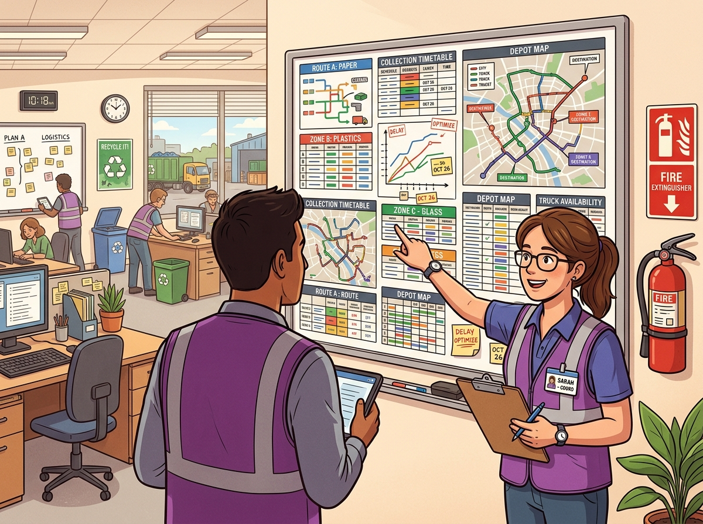

OPERACIÓN

Accede a las herramientas para la ejecución diaria de rutas, comunicación con clientes, checklists e incidencias.
Tu centro de control: todo lo que necesitas para mover la operación hoy.
Accede a las herramientas para la ejecución diaria de rutas, comunicación con clientes, checklists e incidencias.

Consulta calculadoras, reportes, indicadores, documentos y herramientas de soporte para la gestión logística.